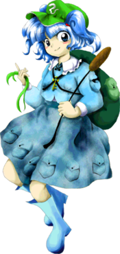
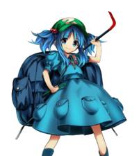

- Welcome to Touhou Wiki!
- Please register to edit. For assistance, check in with our Discord server or IRC channel.
Nitori Kawashiro
Nitori Kawashiro kawaɕiɽo nʲitoɽʲi (♫) Kawasiro Nitori | |
|---|---|
|
Nitori Kawashiro in Antinomy of Common Flowers Super Youkai WarheadMore Character Titles | |
| Species | |
| Abilities |
Manipulation of water |
| Occupation | |
| Location | |
Music Themes | |
| |
Appearances | |
| Official Games | |
| |
| Print Works | |
| |
Nitori Kawashiro (河城 にとり Kawashiro Nitori) is a somewhat shy Kappa who lives in Genbu Ravine on Youkai Mountain. She has the power to control water, and along with the other kappa she is very good with engineering and technology.
General Information[edit]
She first appeared as a stage 3 boss in Mountain of Faith and then became a playable partner with Marisa Kirisame in Subterranean Animism. She was later a Day 6 boss in Impossible Spell Card, and a playable character in Hopeless Masquerade and Urban Legend in Limbo. According to ZUN, there were also plans to make her a playable character in Touhou Hisoutensoku, but she was scrapped due to time constraints.
Personality[edit]
Nitori is a shy kappa by nature, and if she is alone and sees a human, she'll run away, like in Mountain of Faith. She considers herself to be superior to humans and even other youkai, and when she's by herself it's easy to see. However, when among her own circle of friends, she is quite cheerful. As a kappa, she is easily persuaded to leave you alone by a cucumber or two. However, she has a greedy side when it comes to running a stand and is quick to come up with plots to maximize profit.
Ability[edit]
- Manipulation of water
Her ability to manipulate water is inherent in the fact that she is a kappa, and has nothing to do with the myriad tools she uses. No one knows the true extent of this power, but she has been seen to use it to shoot water, create fountains, perform theatrical tricks and even summoning colossal tidal waves.
- Using tools
Akyuu makes a note that kappa, historically, have had an trait called tsuuhai (通背), which means their arms are connected inside their body and they can stretch one arm by retracting the other. However, it is said that they are actually just using tools to make it seem as though their arms stretch.[1] In Wild and Horned Hermit chapter one, Reimu receives a "kappa's arm" that ends up being a mechanical arm. In Hopeless Masquerade, Nitori is also seen using several arm-like machines to attack.
Occupation[edit]
As she is an engineer she is very interested in products made by the humans of the outside world. She takes such products apart and puts them back together in order to understand them. However, she has trouble creating magical tools of any sort. She is fond of selling her inventions and other things such as Fish as her story mode in Hopeless Masquerade details her attempts at running a stand before getting sucked into the battle.
Possessions[edit]
Nitori possesses many small devices and objects, and carries them all in her backpack.
Design[edit]
Name[edit]
Her full name is Nitori Kawashiro (河城 にとり). Kawashiro (河城) means "river(河) castle(城)". Nitori is in hiragana.
Her name might have originated from Ryuunosuke Akutagawa's novel Kappa the second chapter of which begins with the sentence 「そのうちにやっと気がついてみると、僕は仰向けに倒れたまま、大勢の河童にとり囲まれていました。」(Sono uchi ni yatto kigatsuite miru to, boku wa aomuke ni taoreta mama, oozei no kappa ni tori kakomarete imashita., "When at last I came 'round, I found myself lying on my back surrounded by a large number of kappa.") — from the translation by Seiichi Shiojiri.
Appearance[edit]
Nitori has blue hair tied into twintails and blue eyes in Mountain of Faith. She wears a blue dress with lots of pockets around the hem of the skirt and her upper arm, and a dark aquamarine backpack with a golden key on the strap in front of her. She also wears a green hat with a white wispy symbol on it, blue wellington boots and carries a cattail. As an engineer she carries a lot of tools with her in the pockets.
Story[edit]
Games[edit]
When she first sees the heroine, she immediately runs away, but comes back and ambushes her. After the midboss fight, she says her "optical camouflage suit" broke, which confuses the heroine. Nitori mentions that the heroine is pretty strong and beat her even with the camouflage, then warns them that the mountain is dangerous for humans.
- Main article: Reimu Arc
When Reimu and Nitori meet again, Nitori immediately begins to warn Reimu about how dangerous the mountain is again, but Reimu ignores the warning, telling Nitori that she is in her way and she wants to talk to the gods there. Nitori again warns her but Reimu does not listen. Nitori attacks Reimu as a last-ditch attempt to get her to turn back and leave the mountain, but Reimu defeats her in a duel. Nitori is shocked, but says that kappa and humans are sworn friends, and so tells all of the other kappa to let Reimu go up the mountain.
- Main article: Marisa Arc
Much like in Reimu's scenario, Nitori shows up trying to test her optical camouflage suit -- which doesn't work. She is insistent, like in Reimu's scenario, that Marisa turn around and leave the mountain. Marisa quips about how if somebody tells you not to do something, you'll just want to do it more, and the two get into a duel. Nitori loses and says that human and kappa are sworn friends, leaving to tell the other kappa to let her through.
In the end the kappa accepted the new gods of the mountain.
- Subterranean Animism
- Main article: Marisa and Nitori's Scenario
During the events of Subterranean Animism, she is one of the kappa who hears from the God of the sky, Kanako Yasaka about the new power of nuclear fusion in the Underworld. However, they are unwilling to go there due to the oni living underground. Learning that Reimu is going underground to investigate, she convinces Marisa to explore there as well, since she doesn't seem to have anything better to do.
<insert summary>
Presumably from hearing or seeing a wanted sign about the mischief-making amanojaku Seija Kijin, Nitori appears to be one of the many youkai that tries to capture her. She uses spell cards that are considered impossible to dodge.
Nitori, ever a prospective entrepreneur, uses the Urban Legend Incident for profit, and travels across Gensokyo attempting to sell and buy Occult Balls, using an artificial Urban Legend. Because they cannot be exchanged without a fight between two persons holding them, she mostly ends up taking other people's Occult Balls without paying for them.
Literature[edit]
| Attention: This section is a stub and it needs expanding with more information related to the section's topic. If you can add to it in any way, please do so. |
- Wild and Horned Hermit
- Forbidden Scrollery
Nitori along with the other kappas where using an old shack close to the Human Village as a warehouse to keep their items because the Abandon Pond, their original warehouse, was completely frozen. To keep off the humans from approaching they used the "Seven Wonders" to conceal their identities and to guard the shack. After Reimu told them the humans already noticed something strange was going on, Nitori couldn't help but to find another place to store their items, the Forest Ghost Mansion Warehouse.
Relationships[edit]
Nitori knows Marisa Kirisame. In the story of Subterranean Animism the kappa heard news about nuclear power and Nitori asked Marisa to investigate underground.
Obviously she is in a friendly relationship with the other kappa. With the other kappa they experiment and invent with new items. She is seen with the other kappa in Wild and Horned Hermit and Forbidden Scrollery. It should be noted that Kappa are not that great at group projects so it's not likely that she'd work with them.
Humans aren't aware of it, but she states kappa are friends with humans. Nitori in particular is too shy to be with a human when by herself. Even so, Symposium of Post-mysticism states that as a kappa, if a human gets too close she'll remove their shirikodama, and the human will die. She can even use her extending arms (tsuuhai) to grab a person's legs from a distance and drag them in. Because of the conflicting information, it's not really known just how much of an "ally" the kappa are to humans.
During the events of Hopeless Masquerade, the Three Fairies of Light are shown working at Nitori's stall, near the Hakurei Shrine.
Gallery[edit]
Nitori's sigil in The Grimoire of Marisa
Nitori art from Hopeless Masquerade
Nitori art from Urban Legend in Limbo
Nitori in Visionary Fairies in Shrine
Skills[edit]
| Name | Translated | Comments | Games | Usage | ||
|---|---|---|---|---|---|---|
| Total: 11 | ||||||
| 「空中魚雷」 | "Aerial Torpedo" | Used remotely by Marisa | SA | Shot | ||
| 「オプティカルカモフラージュ」 | "Optical Camouflage" | Used remotely by Marisa. Related: Nitori's Spell Card Optics "Optical Camouflage" | SA | Bomb | ||
| 空中ブラスター | Aerial Blaster | Shinto-aligned | HM ULiL AoCF |
Equippable 8C 8C | ||
| 光子トゥーピド | Photon Torpedo | Shinto-aligned | HM ULiL AoCF |
Equippable 4C 4C | ||
| さよならラバーリング | Farewell Rubber Ring | Buddhism-aligned | HM ULiL AoCF |
Equippable 6C 6C at top or bottom of screen | ||
| クリミナルギア | Criminal Gear | Taoism-aligned | HM | Equippable | ||
| ミズバク大回転 | Water Bomb Giant Swing | Buddhism-aligned | HM ULiL AoCF |
Equippable 5C 5C | ||
| 菊一文字コンプレッサー | Kiku-ichimonji Compressor | Taoism-aligned | HM ULiL AoCF |
Equippable 2C 2C | ||
| キューリサウンドシステム | Q-Cumber Sound System | Taoism-aligned Not named in ULiL or AoCF |
HM ULiL AoCF |
Equippable Charged B attack Charged B attack | ||
| ネッシー号出陣 | Nessie Sortie | Aided by Occult Ball | ULiL AoCF |
A+B with Occult Ball A+B with Occult gauge | ||
| ミズドリラー | Water Driller | AoCF | 6C at middle of screen | |||
Spell Cards[edit]
| Name | Translated | Comments | Games | Stage | ||
|---|---|---|---|---|---|---|
| Total: 26 | ||||||
| 光学「オプティカルカモフラージュ」 | Optics "Optical Camouflage" | Related: SA bomb "Optical Camouflage" | MoF | St. 3: E/N | ||
| 光学「ハイドロカモフラージュ」 | Optics "Hydro Camouflage" | MoF | St. 3: H/L | |||
| 洪水「ウーズフラッディング」 | Flood "Ooze Flooding" | MoF | St. 3: E/N | |||
| 洪水「デリューヴィアルメア」 | Flood "Diluvial Mere" | MoF | St. 3: H | |||
| 漂溺「光り輝く水底のトラウマ」 | Drown "Trauma in the Glimmering Depths" | MoF GoM |
St. 3: L ---- | |||
| 水符「河童のポロロッカ」 | Water Sign "Kappa's Pororoca" | MoF GoM |
St. 3: E/N | |||
| 水符「河童のフラッシュフラッド」 | Water Sign "Kappa's Flash Flood" | MoF | St. 3: H | |||
| 水符「河童の幻想大瀑布」 | Water Sign "Kappa's Great Illusionary Waterfall" | MoF | St. 3: L | |||
| 河童「お化けキューカンバー」 | Kappa "Monster Cucumber" | MoF GoM |
St. 3: E/N ---- | |||
| 河童「のびーるアーム」 | Kappa "Exteeeending Aaaaarm" | MoF | St. 3: H | |||
| 河童「スピン・ザ・セファリックプレート」 | Kappa "Spin the Cephalic Plate" | MoF | St. 3: L | |||
| 水符「ウォーターカーペット」 | Water Sign "Water Carpet" | DS | St. 4 | |||
| 河符「ディバイディングエッジ」 | River Sign "Dividing Edge" | DS | St. 4 | |||
| 河童「乾燥尻子玉」 | Kappa "Dried Shirikodama" | DS | St. 4 | |||
| 豪雨「河底大戦争」 | Heavy Rain "Great War Beneath the River" | HM ULiL AoCF |
Use Use Use | |||
| 泡符「撃て！バブルドラゴン」 | Bubble Sign "Fire! Bubble Dragon" | HM ULiL AoCF |
Use Use Use | |||
| 戦機「飛べ!三平ファイト」 | Battle Machine "Fly! Sanpei Fight" | HM ULiL AoCF |
Use Use Use | |||
| 「スーパースコープ３Ｄ」 | "Super Scope 3D" | HM | Use-LW | |||
| 水符「夏のペットボトルロケット」 | Water Sign "Summer Plastic Bottle Rocket" | HM | Story | |||
| 妖怪戦艦「三平ファイター」 | Youkai Battleship "Sanpei Fighter" | HM | Story | |||
| 瀑符「シライトフォール」 | Waterfall Sign "Shiraito Falls" | ISC | St. 6 | |||
| 瀑符「ケゴンガン」 | Waterfall Sign "Kegon Gun" | ISC | St. 6 | |||
| ＊ネス湖は今ここにある！＊ | *Loch Ness is Here Right Now!* | ULiL AoCF |
Use-LW Use-LW | |||
| ＊ネッシーの完全養殖技術＊ | *Perfect Nessie Cultivation Method* | ULiL | Story | |||
| 水面符「ミズバクマスカレード」 | Water Mask Sign "Water Bomb Masquerade" | Co-owner with Kokoro | AoCF | Story | ||
| 拳水符「入道叢雲ミズバク拳」 | Fist Water Sign "Nyuudou Murakumo Water Bomb Fist" | Co-owner with Ichirin | AoCF | Story | ||
Additional Information[edit]
- Nitori's "Optical Camouflage" spell cards may refer to another aspect of kappa that Akutagawa writes about: "But what is most remarkable about kappa is that, unlike human beings, they change colors according to their surroundings."
- Her backpack resembles a tortoise shell, fitting for a kappa.
- Nitori is the only playable partner in Subterranean Animism who never appeared in Scarlet Weather Rhapsody; all the other partners, including Reimu's, did.
- Nitori's last word in Hopeless Masquerade partially resembles to Grenade Launcher, Solid Snake's Final Smash from Super Smash Bros. Brawl. Also because of its name "Super Scope 3D", it may be possibly making a reference to the Super Scope and/or Twilight Frontier's fangame DynaMarisa 3D.
Fandom[edit]
Official Profiles[edit]
|  | ○３面ボス 超妖怪弾頭 河城 にとり（かわしろ にとり） 種族：河童 妖怪の山に住む河童である。ここ暫くの間、河童は滅多に人間の前に姿を現さなくなったが、河童は人間を隠れて観察していた為、人間とは仲が良いつもりでいる。 突然態度や口調を変えたり、ちょっと奇異な性格の持ち主だが、案外、人見知りする。人間をみるとすぐに逃げる。 コテコテのエンジニアで、人工物をみるとすぐにばらしては、元通りにする。その為の工具が、彼女の服にびっしり入っている。 今回は、山には入ろうとしていた霊夢達を追い返そうとしていたのだが、それだけ山が緊急事態だと判断したからである。 |
Stage 3 Boss Super Youkai Warhead
Species: Kappa A kappa that lives on Youkai Mountain. For a long time, kappa haven't let themselves be seen by humans, but since they usually hide to watch humans, they like to think that they are on good terms with humans. She may suddenly change her attitude or speech, and she possesses a rather odd personality, but she's unexpectedly shy. She runs away the moment she sees a human. Since she's an engineering nut, whenever she sees something man-made, she takes it apart and puts it back together. Because of this, her clothes are stuffed with tools. She wanted to turn away Reimu and the others who had entered the mountain, but this is only because she believed that there was some sort of emergency occurring on the mountain. |
| ○３面ボス 超妖怪弾頭 河城 にとり（かわしろ にとり） 種族：河童 妖怪の山に住む河童である。ここ暫くの間、河童は滅多に人間の前に 突然態度や口調を変えたり、ちょっと奇異な性格の持ち主だが、案外、 コテコテのエンジニアで、人工物をみるとすぐにばらしては、元通り 今回は、山に入ろうとしていた霊夢達を追い返そうとしていたのだが、 結局、霊夢達は警告を聞き入れようとしなかった為、にとりはこっそ すったもんだの騒動の結果、結局河童は新しく来た山の神を受け入れ |
Stage 3 Boss Super Youkai Warhead
Species: Kappa A kappa that lives on Youkai Mountain. For a long time, kappa haven't let themselves be seen by humans, but since they usually hide to watch humans, they like to think that they are on good terms with humans. She may suddenly change her attitude or speech, and she possesses a rather odd personality, but she's unexpectedly shy. She runs away the moment she sees a human. Since she's an engineering nut, whenever she sees something man-made, she takes it apart and puts it back together. Because of this, her clothes are stuffed with tools. She wanted to chase away Reimu and the others who had entered the mountain, but this is only because she believed that there was some sort of emergency occurring on the mountain, and she thought the humans would be in danger. In the end, since Reimu and company didn't take her advice, Nitori secretly decided to let them into the mountain. She thought it would be interesting to watch them interact with the mysterious new god. As a result of the ensuing battle, the kappa came to accept the new god of the mountain. |
| ○超妖怪弾頭 河城 にとり（かわしろ にとり） 種族：河童 山に住む河童。 そう考えたのだが、河童として鬼の住む地底には入りたくなかった。 先を越されてなる物かと、にとりは暇そうにしていた魔理沙に話を持ちかけ、地底に潜らせる事にした。 |
Super Youkai Warhead
Species: Kappa A kappa that lives on the mountain. However, the kappa didn't want to go underground where the oni lived. As they were wondering how they could investigate the underground, they heard a rumor that Reimu would be going there at the request of the other youkai. Ever taking the initiative, Nitori decided to go convince Marisa to explore underground, since Marisa didn't seem to have anything better to do. |
|  | 太古！三畳紀の河童
河城にとり オカルト名 「ネス湖の怪物ネッシー」 近作もボール騒動に乗じて商売に余念がないにとりだが ネッシー号は出撃させると独立して支援射撃をしてくれる |
Ancient! The Triassic Kappa
Nitori Kawashiro Occult Name "Loch Ness Monster, Nessie" Again in this game, Nitori's focused on nothing but utilizing the strife over the balls for her business, and she comes bearing a Occult Ball-powered Nessie model! The Nessie model has an artillery battery that can independently deploy back-up fire, but if you run out of power you will lose the Occult Ball so this double edged sword may make or break your advantage. |
Official Sources[edit]
- 2007/07/26 Mountain of Faith Demo - Stage 3 dialogue (Marisa, Reimu); キャラ説明.txt (pre-official profile)
- 2007/08/17 Mountain of Faith - Stage 3 dialogue (Marisa, Reimu); Ending no.1, no.4; キャラ設定.txt (official profile)
- 2008/02/09 Silent Sinner in Blue - Chapter 9
- 2008/08/18 Subterranean Animism - Marisa and Nitori's Scenario and Extra Stage dialogue; キャラ設定.txt (official profile)
- 2009/07/28 The Grimoire of Marisa - Nitori Kawashiro's Spell Cards
- 2010/03/14 Double Spoiler - Stage 4 Spell Card comments
- 2010/09/25 Wild and Horned Hermit - Chapter 2
- 2010/11/25 Wild and Horned Hermit - Chapter 3
- 2010/12/25 Oriental Sacred Place - Chapter 12
- 2011/01/25 Wild and Horned Hermit - Chapter 4
- 2011/03/28 Wild and Horned Hermit - Chapter 5
- 2012/04/27 Symposium of Post-mysticism - Nitori Kawashiro
- 2013/05/26 - Hopeless Masquerade - Playable character
References[edit]
| This page is part of Project Characters, a Touhou Wiki project that aims to write proper descriptions for all official characters of Touhou Project. Please keep the character page guidelines in mind when contributing. |
- Articles with section stubs
- Mountain of Faith
- Subterranean Animism
- Double Spoiler
- Hopeless Masquerade
- Impossible Spell Card
- Urban Legend in Limbo
- Antinomy of Common Flowers
- Characters
- Characters in Mountain of Faith
- Characters in Subterranean Animism
- Characters in Hopeless Masquerade
- Characters in Antinomy of Common Flowers